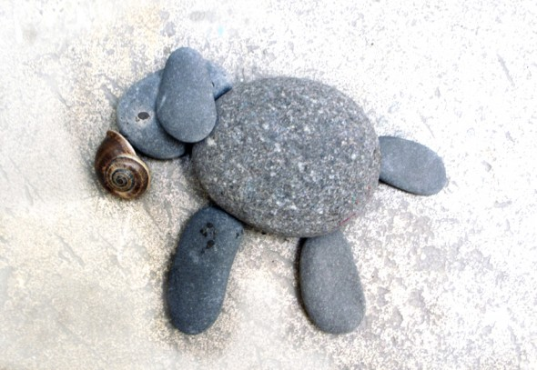
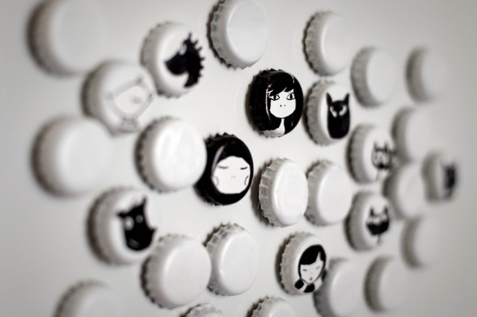
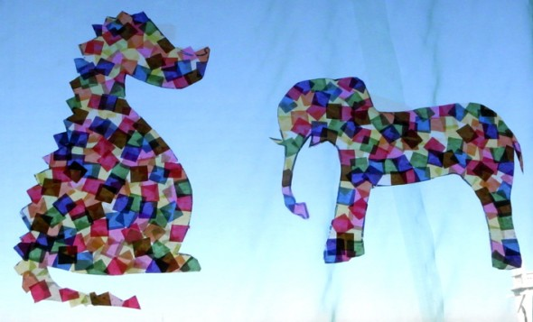
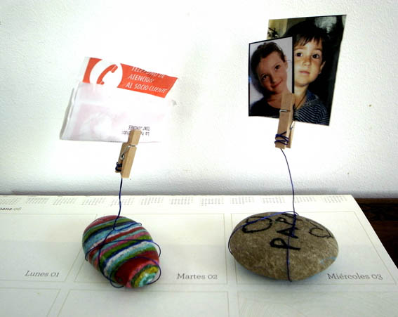
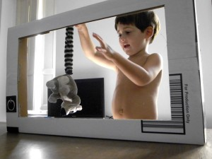

Bag:
Let the hot wax of a burning candle drop on a bag or a T-shirt and dye the textile afterwards.


Rock animals: Put different rocks together creating new forms, like animals. other animals by: pintalaluna , familyfun
Read more →
Caps: First we sprayed white color on the caps and afterwards we drew some faces on them. On the other side we glued cupboards and magnets.
Read more →
Spider web: Spider web made of paper for Halloween. Seen at: omiyageblogs
Read more →
Colored animals: First you need to draw with a permanent pen the silhouette of an animal in a plastic sheet. Afterwards, you glue some colored transparent…
Read more →
Paperweight: After painting some stones we gave the most beautiful ones a new function. A wire is holding the clothespin.
Read more →
My kids on tv: Cutting a cardboard box like a television screen your kids will become newsreaders and many more things!
Read more →